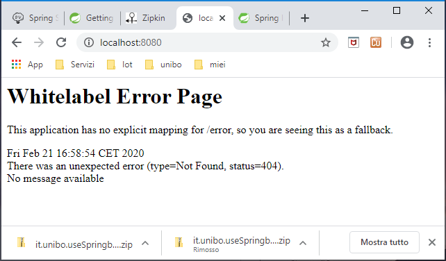
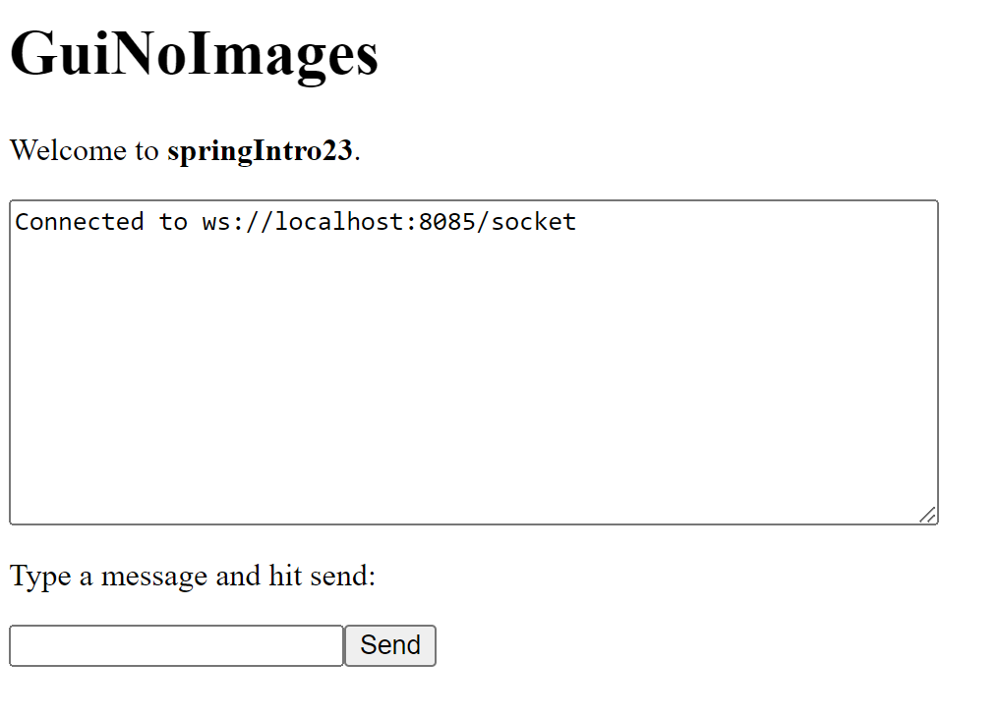

SpringBootIntro¶
Lo sviluppo di una Applicazione web non può presceindere dall’uso di uno dei numerosi framework disponibili (si veda ad esempio WebappFrameworks).
Per il nostro legame con Java, può essere opportuno, per ora, fare riferimento a Springio. Tuttavia, una adeguata alternativa potrebbe essere l’uso di framework basati su Node.js ed Express.
Sappiamo che l’uso di un framework aiuta a risolvere problemi ricorrenti in un dominio e impone precise regole per l’introduzione di componenti applicativi nel contesto dello schema architetturale che il framework utilizza per supportare le sue funzionalità.
Concetti di base¶
Nel caso dei framework nel dominio delle applicazioni Web, troviamo un insieme di concetti e modi di operare comuni:
l’uso di un WebServer (spesso Apache Tomcat) che rimane nascosto al livello applicativo;
l’uso di una infrastruttura che abilita le comunicazioni Client-Server mediante il protocollo HTTP e gli schemi REST di interazione;
la possibilità di definire componenti applicativi ‘innestabili’ nel framework secondo precisi meccanismi. SpringBoot si basa principalmente sul meccanismo delle annotazioni Java;
il concetto di Controller come elemento-base per la gestione dei messaggi;
l’uso di tools che agevolano la creazione dinamica di pagine HTML a partire da template con ‘parametri’ che possono essere fissati dal Controller;
l’abilitazione all’uso delle WebSocket per interazioni asincrone con i Client
Lo schema di funzionamento può essere riassunto come segue:
un operatore umano usa un Browser per collegarsi (Human-Machine interaction ) via HTTP a una certa porta di un nodo remoto, usata come porta di ingresso dal WebServer
l’infrastruttura del framework effettua una prima gestione del messaggio in arrivo in modo da confezionare oggetti computazionali (richieste e/o risposte) da trasferire ad opportuni metodi del Controller per agevolare la stesura del codice di gestione da parte dell’Application Designer. Spesso la perte infrastrutturale è organizzata secondo una pipeline che permette all’Application Designer di introdurre parti di elaborazione a questo livello
i metodi del Controller realizzano la gestione dei messaggi in funzione dei i ‘verbi’ HTTP (GET,PUT,POST,DELETE) con cui sono stati inviati e prepara una pagina HTML di risposta, sfruttando opportuni template predefiniti di pagine.
Modello della pagina¶
I parametri dei template vengono fissati utilizzando un Modello della pagina secondo un classico .
In SpringBoot, il modello fornisce attributi utilizzati per il rendering delle viste: si veda SpringMVCModel.
il Controller restituisce la pagina alla parte infrastruttrale che l’aveva chiamato, la quale provvede a inviare la pagina al Client che aveva effettuato la richiesta HTTP;
se l’operatore umano è sostituito da una macchina si parla di Machine-To-Machine () interaction. I messaggi vengono girati a un Controller specializato per inviare ripsoste in forma di dati, molto spesso in formato XML o JSon.
Architettura del WebServer¶
Dal punto di vista architetturale, l’organizzazione interna del codice del WebServer dovrà essere ispirata ai principi della CleanArchitecture.

|

|
In accordo al principio della inversione delle dipendenze:
I componenti di alto livello non devono dipendere da componenti di livello più basso.
Il concetto di inversione non significa che i livelli di livello inferiore dipendano direttamente dai livelli di livello superiore. Entrambi i livelli dovrebbero dipendere da astrazioni (interfacce) che espongono il comportamento richiesto dai livelli di livello superiore.
Con queste premesse, il compito che ci attende è, in generale, quello di realizzare la parte Presenter, in modo da continuare a tenere separati i casi d’uso dall’interfaccia utente.
Come ogni applicazione SpringBoot, gli elementi salienti sono:
: Un WebServer Controller che si occupa della Human-Interaction (che di norma denomineremo HIController) che presenta all’end user una pagina HTML.
: Una pagina HTML che include campi il cui valore può essere definito attraverso un oggetto
org.springframework.ui.Modelche viene trasferito aHIControllerdalla infrastruttura Spring e gestito mediante la Java template engineTheamleaf.: Un file JavaScript che include funzioni utili per la gestione della pagina lato client.
: l’suo delle WebSocket, per l’aggiornamento automatico della pagina da parte del server. Per poter utilizzare le WebSocket, SpringBoot richiede l’introduzione Un componente che implementa l’interfaccia
WebSocketConfigurerdi org.springframework.web.socket.config.annotation. Per un esempio, si veda Configurazione con WebSocketConfigurer.
Primi passi con SpringBoot¶
Spring Boot da 3.0.0 in avanti richiede Java 17 come versione minima. Poichè noi usiamo Java 8 o 11,
ci dovremo attenere alla serie di rilascio 2.x.
Connettersi a https://start.spring.io/
Selezionare
Gradle-Groovy,Java,2.7.8Group=unibo, Artifact=springIntro23(Options:Packaging=``Jar``, Java=``8``) e le seguenti Dipendenze:Spring Web: crea applicazioni Web, inclusi RESTful, utilizzando Spring MVC. Utilizza Apache Tomcat come contenitore incorporato predefinito.
Thymeleaf: Thymeleaf è un moderno motore di template Java lato server per ambienti web e standalone, che mira a fornire un modo elegante e altamente gestibile per creare modelli. Consente di visualizzare correttamente l’HTML nei browser e come prototipi statici.
Spring Boot DevTools: Fornisce riavvii rapidi delle applicazioni, LiveReload e configurazioni per un’esperienza di sviluppo avanzata. Accelera questo ciclo di aggiornamento (codifica di una modifica, riavvio dell’applicazione e aggiornamento del browser per visualizzare la modifica).
Attivare Generate
Decomprimiere il file generato
springIntro23.zipin una directory vuota ed eseguregradlew build
Progetto springIntro23¶
Si noti il file generato build.gradle include le seguenti dipendenze:
plugins {
id 'java'
id 'org.springframework.boot' version '2.7.8'
id 'io.spring.dependency-management' version '1.0.15.RELEASE'
}
dependencies {
implementation 'org.springframework.boot:spring-boot-starter-thymeleaf'
implementation 'org.springframework.boot:spring-boot-starter-web'
developmentOnly 'org.springframework.boot:spring-boot-devtools'
testImplementation 'org.springframework.boot:spring-boot-starter-test'
}
Aprire un IDE e aprire o importare il progetto
springIntro23. Osservare la classe generataunibo.SpringIntro23Application.javapackage unibo.springIntro23; import org.springframework.boot.autoconfigure.SpringBootApplication import org.springframework.boot.runApplication @SpringBootApplication public class springIntro23Application { public static void main(String[] args) { SpringApplication.run(springIntro23Application.class, args); }
Eseguire l’applicazione (
gradlew bootrun) e aprire un browser sulocalhost:8080: compare la pagina che segue:
{kind=link}
Creare il file
springIntro23\src\main\resources\templates\welcome.htmlcon il seguente contenuto:<html xmlns:th="http://www.thymeleaf.org"> <head><title>Welcome</title></head> <body> <h1>Welcome (in templates)</h1> <p>Welcome to <b><span th:text="${arg}">Our Arg</span></b>.</p> </body> </html>
: Thymeleaf sostituisce il valore risultante dalla valutazione di ${arg} durante l’elaborazione del modello della pagina.
Inserire nel file
springIntro23\src\main\resources\application.propertiesquanto segue:spring.application.name=springIntro23 spring.banner.location=classpath:banner.txt server.port = 8085 human.logo = Gui for human-machine interaction machine.logo = Gui for machine-to-machine interaction
Inserire nella
directory resourcesun filebanner.txtpersonalizzato ( si veda BannerTool).
HIControllerDemo¶
Per introdurre un primo controller, creiamo un file unibo.springIntro23.HIControllerDemo con il seguente contenuto:
package unibo.springIntro23;
import ...
@Controller //ANNOTAZIONE IMPORTANTE
public class HIControllerDemo {
@Value("${spring.application.name}")
String appName;
@GetMapping("/")
public String homePage(Model model) {
model.addAttribute("arg", appName);
return "welcome";
}
@ExceptionHandler
public ResponseEntity handle(Exception ex) {
HttpHeaders responseHeaders = new HttpHeaders();
return new ResponseEntity(
"HIControllerDemo ERROR " + ex.getMessage(),
responseHeaders, HttpStatus.CREATED);
}
}
Attiviamo di nuovo l’applicazione e un browser su localhost:8085. Vedremo comparire:

SpringBootWebSocket¶
Come primo semplice esempio di uso di WebSocket in Spring, creiamo una applicazione che consente a un client di utilizzare un browser per inviare un messaggio o una immagine a un server che provvede a visualizzare il messaggio o l’immagine presso tutti i client collegati.
Usare le WebSocket in SpringBoot¶
Con riferimento al progetto Progetto springIntro23 inseriamo nel file build.gradle la seguente dipendenza:
repositories {
mavenCentral()
flatDir { dirs '../unibolibs' }
}
dependencies {
...
//Added for WebSocket
implementation 'org.springframework.boot:spring-boot-starter-websocket'
//JSON
implementation 'com.googlecode.json-simple:json-simple:1.1.1'
//CUSTOM unibo
implementation name: 'unibo.basicomm23-1.0'
}
Inseriamo un file
index.htmlin resources/static per poter lanciare un’applicazione che presenta un’area di ouput per la visualizzazione di messaggi e un’area di input per la loro immissione.
Il file static/index.html¶
<html> <head> <title>static/index</title> </head> <body> <h1>Welcome in static/index.html</h1> <textarea id="messageArea" name="messageArea" rows="10" cols="60"> </tex area> <div> <p>Type a message and hit send:</p> <input id="inputmessage"/><button id="sendMessage">Send</button> </div> <script src="wsminimal.js"></script> </body> </html>
In questo caso, l’applicazione funzionerà anche senza la introduzione di un Controller, in quanto Spring utilizza di default il file
resources/static/index.html.Per fare una prova, commentiamo l’annotazione @Controller in HIControllerDemo, rilanciamo l’applicazione e apriamo su un browser con
localhost:8085.
La pagina si presenta come segue:

Se invece è presente il controller HIControllerDemo, allora apriamo in un browser la pagina
http://localhost:8085/index.html.
Lo script wsminimal.js¶
Lo script resource/static/wsminimal.js definisce funzioni che realizzano la connessione con il server
e funzioni di I/O che permettono di inviare un messaggio al server e di visualizzare la risposta.
Funzioni di connessione e ricezione messaggi¶
connect: effettua una connessione alla WebSocket e riceve i messaggi inviati dal server.
var socket = connect();
function connect(){
var host = document.location.host;
var pathname = document.location.pathname;
var addr = "ws://" +host + pathname + "socket" ;
// Assicura che sia aperta un unica connessione
if(socket!==undefined && socket.readyState!==WebSocket.CLOSED){
alert("WARNING: Connessione WebSocket già stabilita");
}
socket = new WebSocket(addr); //CONNESSIONE
socket.onopen = function (event) {
addMessageToWindow("Connected");
};
socket.onmessage = function (event) { //RICEZIONE
addMessageToWindow(""+`${event.data}`);
};
return socket;
}//connect
Si noti la struttura di codice già incontrata in Java.
Funzioni di input/output¶
sendMessage: invia un messaggio al server attraverso la socket
addMessageToWindow : visualizza un messaggio nella output area
const messageWindow = document.getElementById("messageArea");
const messageInput = document.getElementById("inputmessage");
const sendButton = document.getElementById("sendMessage");
sendButton.onclick = function (event) {
sendMessage(messageInput.value);
messageInput.value = "";
}
function sendMessage(message) {
var jsonMsg = JSON.stringify( {'name': message});
socket.send(message);
}
function addMessageToWindow(message) {
messageWindow.innerHTML += message + "\n"
}
Configurazione con WebSocketConfigurer¶
Affinché l’applicazione Spring inoltri le richieste di un client al server,
è necessario registrare un gestore utilizzando una classe di configurazione
che implementa l’interfaccia WebSocketConfigurer.
@Configuration
@EnableWebSocket
public class WebSocketConfiguration implements WebSocketConfigurer {
public static final WebSocketHandlerDemo wshandler = new WebSocketHandlerDemo();
public static final String wspath = "socket";
@Override
public void registerWebSocketHandlers(WebSocketHandlerRegistry registry){
registry.addHandler(wshandler, wspath).setAllowedOrigins("*");
}
}
L’annotazione @EnableWebSocket (da aggiungere a una classe qualificata @Configuration)
abilita l’uso delle plain WebSocket.
In base alla configurazione wspath=”socket” trasferita in fase di registrazione dell’handler
WebSocketHandlerDemo, il server, avvalendosi di una istanza di WebSocketHandler,
risponderà a richieste inviate al seguente indirizzo:
ws://<serverIP>:8085/socket
Il gestore WebSocketHandlerDemo¶
La classe WebSocketHandlerDemo definisce un gestore custom di messaggi come specializzazione della classe astratta
org.springframework.web.socket.handler.AbstractWebSocketHandler
(o delle sue sottoclassi TextWebSocketHandler o BinaryWebSocketHandler).
public class WebSocketHandlerDemo
extends AbstractWebSocketHandler {//che implements WebSocketHandler interface
private final List<WebSocketSession> sessions=new CopyOnWriteArrayList<>();
...
}
Propagazione a tutti i client¶
Per propagare un messaggio a tutti i client connessi attraverso la WebSocket, basta tenere traccia delle sessioni.
@Override //AbstractWebSocketHandler
public void afterConnectionEstablished(WebSocketSession session) throws Exception{
sessions.add(session);
super.afterConnectionEstablished(session);
}
@Override //AbstractWebSocketHandler
public void afterConnectionClosed( WebSocketSession session,
CloseStatus status) throws Exception{
sessions.remove(session);
super.afterConnectionClosed(session, status);
}
Nel nostro caso, la gestione del messaggio ricevuto
consiste nel reinviare sulla WebSocket il messaggio stesso.
Questa azione del server porrà in esecuzione sul client l’operazione socket.onmessage
(si veda connect) che visualizzerà il messaggio nell’area di output.
@Override //AbstractWebSocketHandler
protected void handleTextMessage(WebSocketSession session,
TextMessage message) throws IOException{
String cmd = message.getPayload();
sendToAll("echo: "+cmd);
}
protected void sendToAll(TextMessage message) throws IOException{
Iterator<WebSocketSession> iter = sessions.iterator();
while( iter.hasNext() ){ iter.next().sendMessage(message);}
}
Un client in Java¶
Definiamo un client in Java che usa ConnectionFactory per creare una connessione di tipo WsConnection con il server, aggiungendo se stesso come osservaore sulla connessione.
public class TestClient extends ApplAbstractObserver {
private Interaction2021 clientConn;
public TestClient(){
clientConn = ConnectionFactory.createClientSupport(
ProtocolType.ws, "localhost", "8085/socket"); //!!! NOTE 8085/socket
((WsConnection)clientConn ).addObserver(this);
}
@Override
public void update(String s) {
CommUtils.outblue("TestClient update=" + s);
}
public void doJob(){
try {
clientConn.forward("hello from Java client");
CommUtils.outblue("TestClient forward done " );
Thread.sleep(2000); //To sse the update
} catch (Exception ex) {
CommUtils.outred("TestClient ERROR: " + ex.getMessage());
}
}
public static void main(String[] args) {
TestClient appl = new TestClient();
appl.doJob();
}
}
Esecuzione del client¶
Attivare l’applicazione Spring
SpringIntro23ApplicationSENZA ControllerAprire un browser su
localhost:8085Attivare
TestCliente osservare l’update sulla output area della pagina
Un Controller applicativo¶
L’introduzione di un Controller può essere utile per offire più funzionalità, come ad esempio la possibilità di trasferire immagini.
HIControllerAppl¶
Commentiamo l’annotazione @Controller in HIControllerDemo e definiamo un nuovo controller.
import org.springframework.ui.Model
@Controller
//@RequestMapping("/Api")
public class HIControllerAppl {
@Value("${spring.application.name}")
String appName;
@GetMapping("/")
public String homePage(Model model) {
model.addAttribute("arg", appName);
return "GuiNoImages";
}
@GetMapping("/img")
public String textOnly(Model model) {
model.addAttribute("arg", appName);
return "GuiAlsoImages";
}
GuiNoImages.html¶
In resource/templates inseriamo un file simile a index.html, che include anche campi i cui valori possono essere fissati dal controller (grazie a Thymeleaf) mediante il Model.
<html xmlns:th="http://www.thymeleaf.org">
<head>
<title>GuiNoImages</title>
</head>
<body>
<h1>GuiNoImages</h1>
<p>Welcome to
<b><span th:text="${arg}">Our Arg</span></b>.</p>
<textarea id="messageArea"
name="messageArea" rows="10" cols="60">
</textarea>
<div>
<p>Type a message and hit send:</p>
<input id="inputmessage"/>
<button id="sendMessage">Send</button>
</div>
<script src="../wsminimal.js"></script>
</body>
</html>
|
 |
{kind=link}
GuiAlsoImages.html¶
Il file GuiAlsoImages.html definisce una pagina HTML che permette, oltre all’invio e ricezione di
testi, il trasferimento di immagini.
Questo file:
|

|
Struttura generale del file GuiAlsoImages.html¶
<html>
<head>
<link href="/webjars/bootstrap/css/bootstrap.min.css" rel="stylesheet">
<script src="/webjars/jquery/jquery.min.js"></script>
<title>GuiAlsoImages</title>
</head>
<body>
<div id="main-content" class="container-fluid pt-3">
<h1>GuiAlsoImages</h1>
<!-- Connessione/Disconnessione alla WebSocket -->
<!-- Inserzione di testi e immagini -->
<!-- Area di output testuale -->
<!-- Area per le immagini -->
</div>
</body>
Notiamo la necessità dell’uso di un WebJarsContainer come elemento-base del layout Bootstrap.
Bootstrap e webJars¶
L’uso di Bootstrap avviene attraverso i WebJars, introducendo in build.gradle le seguenti nuove dipendenze:
implementation 'org.webjars:webjars-locator-core'
implementation 'org.webjars:bootstrap:5.1.3'
implementation 'org.webjars:jquery:3.6.0'
I WebJar (che non sono legati a Spring) sono dipendenze lato client impacchettate in file JAR. Per approfondire, si veda: WebJarsDocs e WebJarsExamples.
Connessione/Disconnessione alla WebSocket¶
La parte di pagina relativa alla (dis)connessione: 
Si veda anche (su wsalsoimages): |
viene prodotta come segue: <div class="row">
<div class="col-md-6">
<form class="form-inline">
<div class="form-group">
<label for="connect">WebSocket connection:</label>
<button id="connect" class="btn btn-default"
type="submit">Connect</button>
<button id="disconnect" class="btn btn-default"
type="submit" disabled="disabled">Disconnect
</button>
</div>
</form>
</div>
</div>
|
Inserzione di testi e immagini¶
La parte di pagina relativa ai pulsanti di invio: 
Si veda anche: |
viene prodotta come segue: <div class="row">
<div class="col-md-6">
<form class="form-inline">
<div class="form-group">
<label for="inputmsg">Input (text)</label>
<input type="text" id="inputmsg"
class="form-control" placeholder="Input here...">
</div>
<button id="sendmsg"
class="btn btn-default" type="submit">Send text</button>
</form>
</div>
</div>
<div class="row">
<div class="col-md-6">
<form class="form-inline">
<div class="form-group">
<label for="myfile">Input (image)</label>
<input type="file" id="myfile" name="myfile"
class="form-control" accept="image/*"/>
</div>
<button id="sendImage"
class="btn btn-default" type="submit">Send Image</button>
</form>
</div>
</div>
|
Area di output¶
La parte di pagina relativa all’area di output: 
Si veda anche: |
viene prodotta come segue: <div class="row">
<div class="col-md-12">
<table id="conversation" class="table table-striped">
<thead>
<tr>
<th>Output Area</th>
</tr>
</thead>
<tbody id="output">
</tbody>
</table>
</div>
</div>
|
Area delle immagini¶
{kind=link}
Lo script wsalsoimages.js¶
Lo script wsalsoimages.js utilizza jQuery per realizzare funzioni:
per la connessione/disconnessione mediante WebSocket: Funzioni di (dis)connessione su webSocket;
per permettere all’utente di inserire messaggi e immagini da inviare al server mediante WebSocket: Funzioni di gestione pulsanti;
per visualizzare informazioni ricevute dal server: Aggiornamento aree di output.
Riferimenti a oggetti della pagina¶
var socket; //set by connect() called by the enduser
var sockConnected = false;
const imageWindow = document.getElementById("imageArea");
const fileInput = document.getElementById("myfile");
Gli elementi della pagina imageArea e myfile sono ovviamwnte quelli definiti nel file
GuiAlsoImages.html.
Funzioni di (dis)connessione su webSocket¶
Al caricamento della pagina si vuole sia attivo il solo pulsante Connect, che va disattivato (a favore di Disconnect) una volta premuto.
La creazione della WebSocket è accompagnata dalla definizione di callback relativi alla apertura della socket e alla ricezione di messaggi dal server.
function connect(){
var host = document.location.host;
var pathname = "/"; //document.location.pathname;
var addr = "ws://" + host + pathname + "socket" ;
// Assicura che sia aperta un unica connessione
if(socket !== undefined && socket.readyState !== WebSocket.CLOSED){
console.log("Connessione WebSocket già stabilita");
}
socket = new WebSocket(addr);
socket.binaryType = "arraybuffer";
socket.onopen = function (event) {
setConnected(true);
addMessageToWindow("Connected");
};
//RICEZIONE di messaggi dal server
socket.onmessage = function (event) {
if (event.data instanceof ArrayBuffer){ //Image
setImageInWindow(event.data);
} else {
addMessageToWindow(`${event.data}`);
}
}
socket.onclose = function (event) {
alert("onclose event=" + event.reason)
connect(); //AUTOMATIC RECONNECTION...
}
}//connect
function disconnect() { setConnected(false); }
function setConnected(connected) {
$("#connect").prop("disabled", connected);
$("#disconnect").prop("disabled", !connected);
$("#output").html("");
}
Funzioni di gestione pulsanti¶
$(function () {
$("form").on('submit', function (e) { e.preventDefault(); });
$( "#connect" ).click(function() { connect(); });
$( "#disconnect" ).click(function() { disconnect(); });
$( "#sendmsg" ).click(function() { sendMessage($("#inputmsg").val());});
$( "#sendImage" ).click(function() {let f = fileInput.files[0]; sendMessage(f);});
});
$(function () { ... })è uno short-hand per invocare una funzione dopo che tutti gli elementi del DOM della pagina sono stati caricati, ed equivale a:$(document).ready(function() { ... });e.preventDefault()viene usato per evitare che un click su un pulsante inneschi la navigazione verso l’URL da parte del browser.In sua assenza, il server riinivierebbe la pagina, perdendo così gli aggiornamenti sulle aree di output.
Funzioni di invio su WS¶
function sendMessage(message) {
if( socket == null || ! sockConnected ) alert("Please connect ...");
else socket.send(message);
}
Aggiornamento aree di output¶
Ricordando Riferimenti a oggetti della pagina:
function addMessageToWindow(message) {
$("#output").append("<tr><td>" + message + "</td></tr>");
}
function setImageInWindow(image) {
let url = URL.createObjectURL(new Blob([image]));
//Usando DOM
//imageWindow.innerHTML = `<img src="${url}"/>`
//Usando jQuery
$("#imageArea").html(`<img src="${url}"/>`);
}
//Volendo appendere una immagine nella outputArea ...
function addImageToWindow(image) {
let url = URL.createObjectURL(new Blob([image]));
$("#output").append("<tr><td>" +
`<img src="${url}"/>` + "</td></tr>");
}